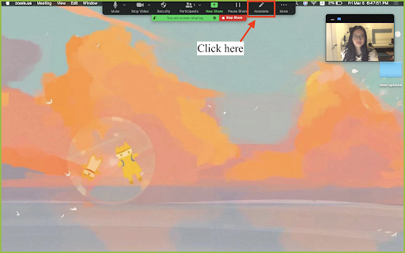
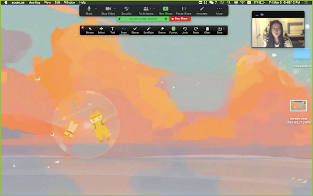

Learn through our comprehensive and quick video explanation!
Written and Photo Manuals
Learn by reading through our detail-oriented and carefully
curated written and photo manuals.
How to access the toolbar:
1. The annotation toolbar is a black bar on the
top of the screen that should appear automatically when a screen is shared.

2. If you are the screen-sharer, the tool bar can be accessed by
clicking on the Annotate button on the black toolbar on the top of the screen. If you
are not the
screen-sharer, click on View Options on the top of the screen and select
Annotate from
the drop-down
menu.
3. Click on one of the buttons to select a tool. The currently
used annotation tool is colored blue. The default is Draw.

4. Click on the x button at the top left of the
toolbar to close
it.
Tools (selected descriptions going from left to right of the toolbar):
Mouse: No annotation tool is being used. Use this button to
revert back to your cursor.
Select: Used to move more than one annotation from one place to
another on the screen. Hold and drag your cursor from the top left to the bottom right, then release. To
create a box that encloses the annotations to be moved, click and hold to move the selected annotations.
Text: Used to insert text. Click on any part of the shared
screen to create a textbox that can be typed in.
Draw: Used to create lines, arrows and shapes. Select one of the
options from the drop-down menu to make markings anywhere on the shared screen. The first option (top
left) allows you to draw freely on the screen.
Spotlight: Allows participants to see your cursor on the shared
screen by changing it into a spotlight or an arrow. The spotlight option is only available to the
screen-sharer. The left choice is the spotlight and the right is the arrow in the resulting drop-down
menu.
Eraser: Removes markings made from the shared screen by clicking
on the marking.
Format: Used to change color, thickness and font of drawings and
text. Select desired color, thickness, or font from the resulting drop-down menu.
Clear: Removes all annotations from the screen. Participants can
clear their own annotations while hosts can also clear all or only viewers’ annotations. The selections
are available in the resulting drop-down menu.